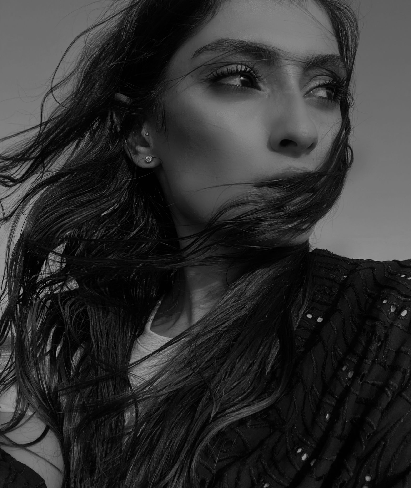
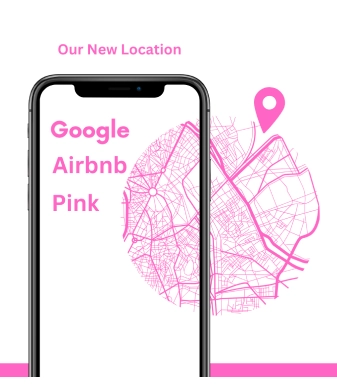
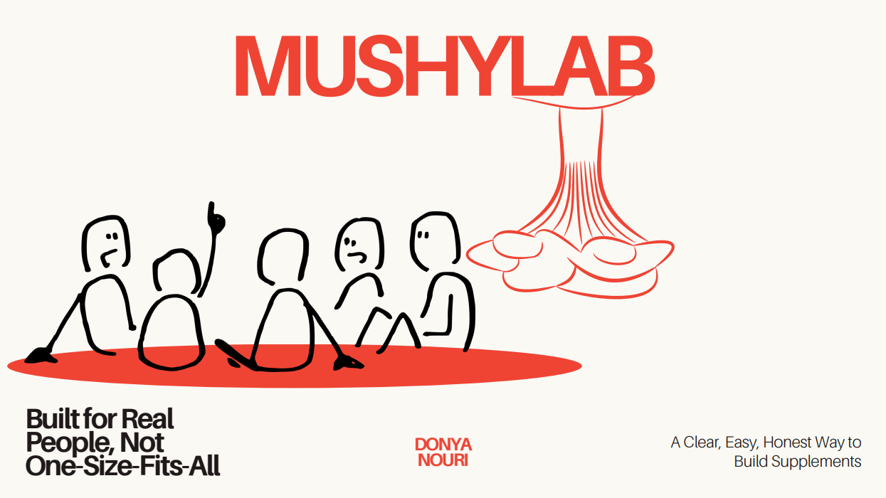
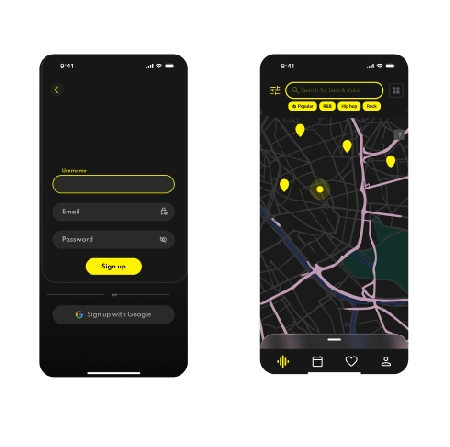

Independent designer · Stockholm / Tehran
Design that
feels human.
I’m Donya — a visual designer and product thinker shaping brands, interfaces, and digital experiences with clarity, empathy, and a little bit of joy.

7+ yearsof making
things clear
01 / 03Visual · Product · Brand
Scroll to discover
01A designer who
A designer who
gets people.
Good design is a conversation. I listen closely, find the signal in the noise, and turn complex ideas into experiences people can understand — and want to use.
With 7+ years across branding, UI/UX, and digital design, I work from strategy through to the final pixel. A previous life as an English teacher taught me how to communicate, collaborate, and make the complicated feel simple.
More about my experience
What I bring01 / Visual identity02 / Product design03 / Design strategy04 / Communication
02Selected
Selected
work.
A few things I’ve helped bring to life — from safety and wellbeing to mushrooms and pet care.
Building a more
human social web.

Designing safer
ways home.

Making wellness
personal.

A softer kind
of support.

Good nights start
with a plan.
More experiments, identities & interfacesView all projects
03
Currently open to thoughtful collaborations
and kind, ambitious teams.
and kind, ambitious teams.